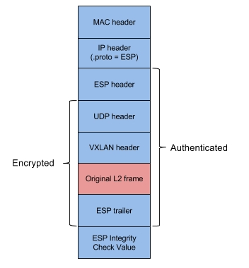
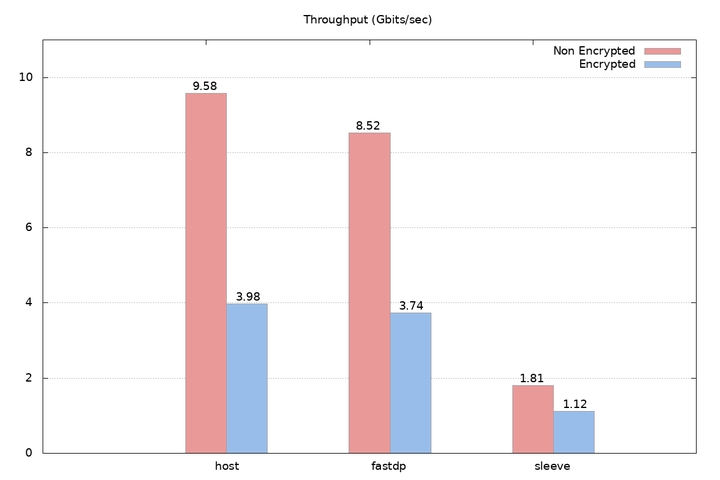

Weave Net 1.2 introduced a high performance overlay network for containers called fast datapath (fastdp). Despite advantages, the overlay had a limitation that it did not have any built-in mechanism for encrypting dataplane packets, so by default, it could not be securely used in untrusted networks. Today, this is no longer true, as we are announcing the release of Weave Net 1.9 which enables encryption in fast datapath, with measured throughput up to three times higher than the previous default overlay (sleeve).
Enabling encryption in fast datapath is done in the same way as in sleeve: you need to specify a password when launching Weave Net, as described in Securing Connections Across Untrusted Networks.
However, as fast datapath leverages the ESP protocol of IPsec (see Details section), please keep the following requirements and limitations in mind:
If Weave Net is not able to establish encryption in fast datapath due to any of the requirements not being met, it will automatically fall back to the slower sleeve overlay in the encrypted mode. Thus, it guarantees that a traffic is always encrypted. To see which overlay is in use, you can run weave status connections command.
Communication over the encrypted fast datapath has the following security properties:
The encryption feature is implemented using the ESP protocol of IPsec. Each fast datapath packet is authenticated and encrypted with AES-GCM, and encapsulated with ESP in the transport mode.
Per each connection direction, a different AES-GCM 32-byte key and 4-byte salt are used. The pairs are derived with the HMAC-based Key Derivation Function (HKDF) by using SHA256 as the hashing algorithm, a 32-byte ephemeral session key which derivation is documented in Establishing the Ephemeral Session Key as input keying material, a 32-byte randomly generated and exchanged over the encrypted control plane channel nonce, and a peer name as optional context.
Packet integrity and authenticity of origin is protected with 16-byte Integrity Check Value which is included in each packet.
The structure of an encrypted fast datapath packet is shown below.

The decision to use AES-GCM is based on security requirements, and its performance characteristics. For Intel Architecture Processors, the Linux kernel implements the crypto algorithm by using special set of instructions which gives significant gains in performance.
By default, the ESP protocol implementation in the Linux kernel uses 4-byte Sequence Number (SeqNo) to protect against replay attacks. However, SeqNo’s of such size are prone to overflows in networks of large data volume and high throughput. To prevent it from happening, we use 8-byte Extended Sequence Number (ESN).
Security associations and policies are controlled by the Linux kernel IP transformation framework, or XFRM. During the development of the encryption feature, we discovered and fixed a bug in the kernel which limits XFRM functionality for VXLAN tunneling.
As the Linux kernel does not implement IP Security API Extensions to BSD Sockets to prevent from sending unencrypted traffic over secure channels, we install additional iptables rules. This is necessary as an end-user with administrator capabilities might accidentally modify the security associations.
To compare the performance of encryption in both overlays, we ran TCP throughput benchmarks with iperf3 between two Amazon EC2 c3.8xlarge instances connected with enhanced 10 Gigabit networking. Each instance was running Ubuntu 16.04 LTS. Exact steps for running bechmarks can be found here.
The results are shown below. Firstly, encrypted fast datapath outperformed encrypted sleeve by factor of three – because our combination of VXLAN and IPsec stays in the kernel and does not incur the overhead of user-space processing. Secondly, the encryption implementation in fast datapath does not introduce any significant overhead when comparing its throughput with the throughput measured between two hosts communicating over the IPsec protected channel.

Additionally, we evaluated Chacha20,Poly1305 as an alternative crypto suite for fast datapath. The achieved throughput was 2.88 Gbits/s which is lower than the one of AES-GCM, therefore we decided to use the latter.
We presented the encryption feature in fast datapath which enables fast and secure communication among containers.The conducted benchmarks shows that the throughput of the encrypted fast datapath is three times higher than the throughput of the encrypted sleeve, and its performance is very close to IPsec on hosts communicating without overlays.